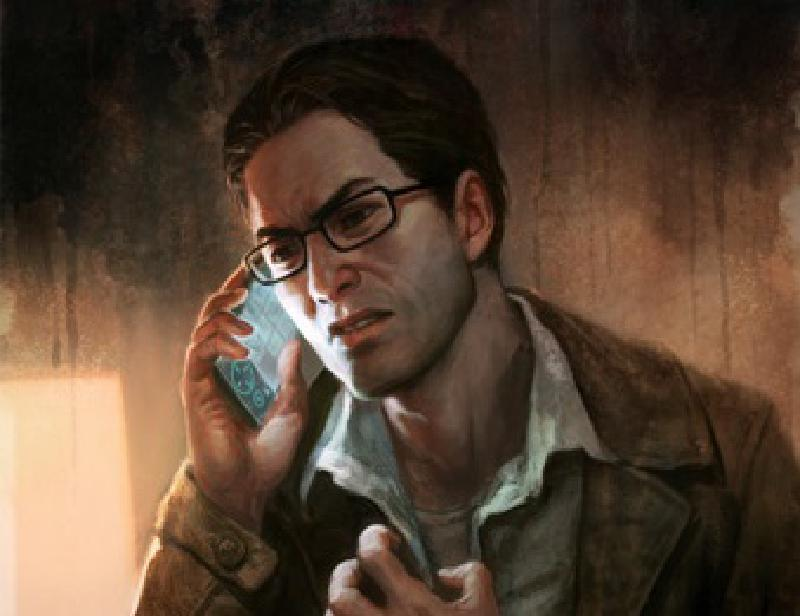
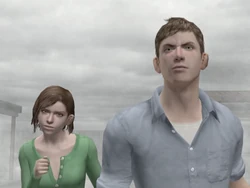
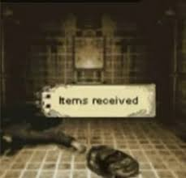
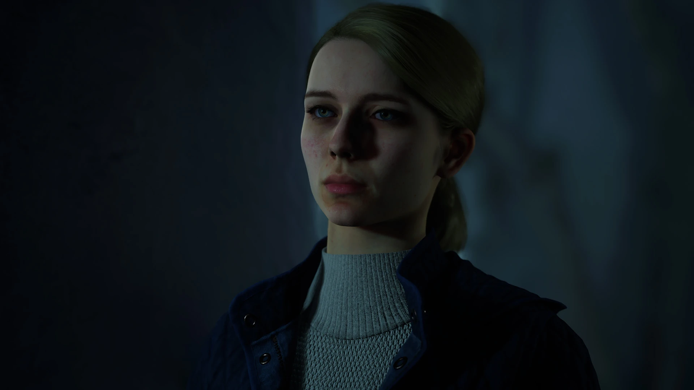
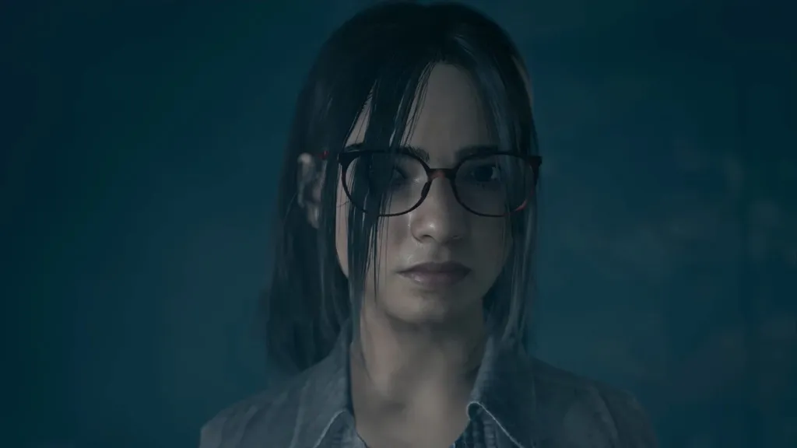
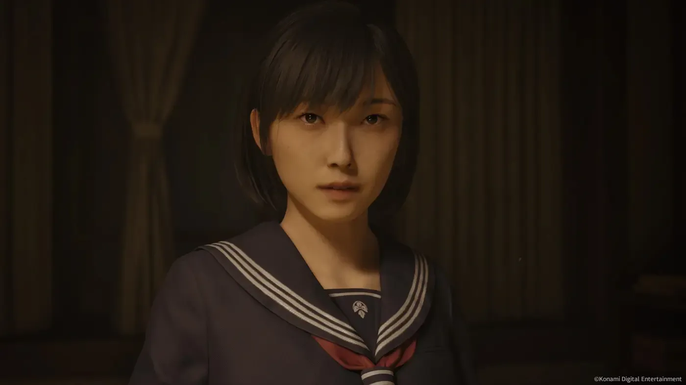
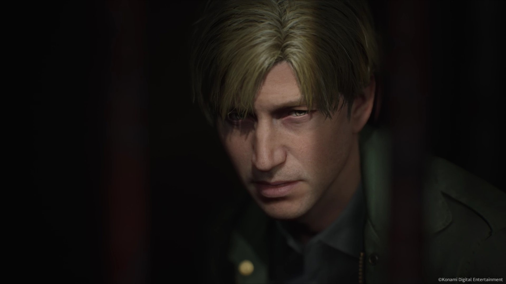

Harry Mason
Harry Mason é o protagonista do primeiro jogo da franquia. Um escritor comum e um pai extremamente dedicado que, após sofrer um acidente de carro na entrada de Silent Hill, acorda e percebe que sua filha adotiva, Cheryl, desapareceu na névoa. Sem qualquer treinamento de combate ou poderes especiais, Harry explora a cidade deserta enfrentando criaturas grotescas e rituais de um culto macabro, movido puramente pelo amor paternal e pelo desespero de encontrar sua filha.
Travis Grady
Travis Grady é o caminhoneiro que protagoniza Silent Hill: Origins. Enquanto fazia uma entrega de rotina passando pelos arredores da cidade, ele quase atropela uma figura na estrada e acaba resgatando uma garota chamada Alessa Gillespie de um incêndio criminoso. Ao tentar descobrir o estado de saúde da menina, Travis entra em Silent Hill e se vê obrigado a reviver traumas de infância profundamente reprimidos, como o suicídio de sua mãe e a trágica morte de seu pai.
James Sunderland
James Sunderland é o complexo protagonista de Silent Hill 2, amplamente considerado uma das narrativas mais marcantes dos videogames. Ele decide viajar até a cidade após receber uma carta misteriosa assinada por sua esposa, Mary, que faleceu há três anos devido a uma doença terminal. Ao chegar ao local, James se depara com uma versão de Silent Hill moldada pelo seu próprio subconsciente, preenchida por monstros que manifestam sua intensa culpa, negação e desejos reprimidos.
Heather Mason
Heather Mason (nascida Cheryl) é a jovem e destemida protagonista de Silent Hill 3. Sendo a reencarnação de Alessa Gillespie e filha adotiva de Harry Mason, ela passou a vida se escondendo sob identidades falsas para fugir do culto religioso da cidade. Quando o grupo fanático conhecido como "A Ordem" a localiza para usá-la como receptáculo no nascimento de seu deus sombrio, a vida pacata de Heather é destruída, forçando-a a abraçar seu passado e lutar por vingança e sobrevivência.
Henry Townshend
Henry Townshend é um jovem tímido e reservado que protagoniza Silent Hill 4: The Room. Ao contrário dos outros internacionais, ele não viaja para a cidade de livre vontade; ele acorda trancado em seu próprio apartamento (o Quarto 302, na cidade vizinha de Ashfield), com janelas coladas e correntes na porta. Para tentar escapar desse isolamento claustrofóbico, Henry precisa atravessar buracos bizarros que surgem em suas paredes, caindo diretamente nos mundos de pesadelo criados pelo assassino em série Walter Sullivan.
Alex Shepherd
Alex Shepherd é o protagonista de Silent Hill: Homecoming. Ele é um jovem que retorna à sua cidade natal, Shepherd's Glen (vizinha de Silent Hill), após receber alta de um hospital militar devido a ferimentos de guerra. Ao chegar, ele encontra seu lar mergulhado em uma névoa misteriosa, seu pai desaparecido e sua mãe em estado catatônico. Determinado a encontrar seu irmão mais novo, Joshua, Alex descobre segredos terríveis sobre a fundação de sua própria família e os pactos de sangue que regem a região.
Murphy Pendleton
Murphy Pendleton protagoniza Silent Hill: Downpour. Ele é um prisioneiro com um passado sombrio que consegue escapar quando o ônibus de transporte da prisão sofre um terrível acidente nos limites de Silent Hill. Vagando pela ala sudeste da cidade, onde a chuva constante molda o pesadelo, Murphy é perseguido não apenas por criaturas aquáticas e deformadas, mas também pelas lembranças da perda de seu filho e pelas escolhas violentas que fez em busca de vingança.
Harry Mason (Shattered Memories)

Esta versão de Harry Mason pertence a uma releitura psicológica do jogo original. Aqui, ele é um pai desesperado que sofre um acidente de carro em uma Silent Hill congelada e distorcida enquanto procura por sua filha Cheryl. A grande reviravolta desta versão é que a jornada do personagem é moldada diretamente pelas respostas e testes de perfil psicológico que o jogador realiza durante as sessões de terapia no consultório do Dr. Kaufmann.
Eric e Tina

Eric e Tina são os dois jovens internacionais que protagonizam Silent Hill: The Arcade. Eric é um estudante universitário assombrado por pesadelos sobre o naufrágio do navio Little Baron, ocorrido no lago da cidade, enquanto Tina viaja ao local para encontrar sua amiga por correspondência, Emilie. Juntos, eles acabam presos na versão de pesadelo de Silent Hill, precisando lutar contra hordas de criaturas para desvendar os mistérios do passado que conectam suas famílias à tragédia do lago.
Ben

Ben é um dos três sobreviventes que protagonizam o spin-off para celulares Silent Hill: Orphan. Ele é um jovem adulto que carrega o peso de ter sobrevivido a um massacre terrível ocorrido trinta anos atrás no Orfanato de Silent Hill, onde quase todas as outras crianças foram misteriosamente assassinadas. Guiado por uma força desconhecida, ele retorna ao local agora abandonado para confrontar as memórias reprimidas daquela noite e descobrir a verdade por trás do massacre.
Astrid Johansen

Astrid Johansen é uma das protagonistas centrais da série interativa Silent Hill: Ascension. Residindo em uma pacata comunidade pesqueira na Noruega, a vida de Astrid é virada do avesso após uma tragédia local libertar manifestações físicas de monstros terríveis, alimentados pela culpa coletiva e por segredos de família há muito enterrados. Ela precisa liderar e tomar decisões difíceis para proteger aqueles que ama enquanto lida com o colapso psicológico de sua própria comunidade.
Anita

Anita é a jovem protagonista de Silent Hill: The Short Message, ambientado em um complexo de apartamentos abandonado na Alemanha contemporânea chamado "The Villa". Consumida pela baixa autoestima, pressões das redes sociais, isolamento e a dor do luto, Anita entra no prédio após receber mensagens de sua amiga Maya. Lá dentro, ela fica presa em um ciclo interminável de pesadelo, perseguida por um monstro que reflete seus próprios traumas emocionais e pensamentos autodestrutivos.
Hinako Shimizu

Hinako Shimizu é a protagonista de Silent Hill f, marcando a primeira vez que a franquia principal deixa os Estados Unidos para se passar no Japão rural da década de 1960. Hinako é uma estudante comum que se vê cercada por um horror belo e ao mesmo tempo grotesco, onde a realidade da pacata vila japonesa começa a ser consumida por uma infestação de fungos sobrenaturais, plantas carnívoras e flores que se espalham pelos corpos das pessoas, alterando o ambiente e desenterrando lendas antigas.
James Sunderland (Remake)

Esta versão de James Sunderland traz uma reinterpretação visual e emocional moderna para o clássico protagonista de Silent Hill 2. Com tecnologia de captura de movimentos e foco em expressões faciais realistas, o Remake aprofunda ainda mais a angústia, o cansaço e a deterioração psicológica de James à medida que ele explora a cidade enevoada. O visual atualizado destaca de forma mais crua a dor e a sutil desconexão com a realidade de um homem confrontado pelos aspectos mais sombrios de sua própria mente.